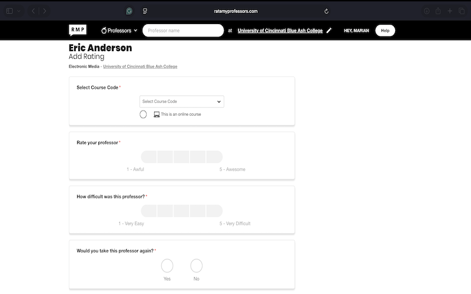

Leaving your own review
Leaving a review is just as important as reading one. Like we have been tlaking about other peoples review.
With how Ratemyprofessor is set up you can leave a review and no one will ever know that it was you who left that review.
leaving a review is very easy,you can do it from any device and it will take 5 minnutes.
- Go to Ratemyprofessor.com in any browser
- Search for your school that you attend in the search bar
- Find the professor that shows up for the courses that your're expected to take
- There should be a blue Rate button right below their name
- A drop down menu will show up for you to select the course that you took with that professor
- with oyur curosr you can select the rating you wish to give the professor from 1 through 5,the same apllies for rating how difficult the professor was.
- Answer yes or no to the questions on wether you'd take the professor again,wether the class was for credit or not,and if attendance was madatory.
- Leave the grade that you recieved as well as any comments make sure they are honest comments.
These are the steps to leave a review
Press submit and that's it no account needed.

What makes a good review
For your review to be helpful,your review needs to be specific.Instead of just being generic saying "the professor was bad" Instead explain what made the professor good or bad,things like how quickly they grade,if their exams match the study guides they provided.
Try to be fair but it was you experience and if the professor was that awful then people deserve to know.
Try not to get too emotional try to focus on your academic experience.
your review is valuable information to an outsider looking in you have expereinced the ins' and outs of the professor you know what their like,Help other students make the right decision when it comes to their academic expereince.